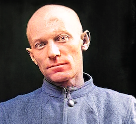

BUSTED!
Pictured at booking time just yesterday January 16
But can he stay out of prison this time?
(New York City, Jan 25) Everyone's least favorite rapper has gone on yet another alcohol-fueled rampage, causing authorities to second-guess his early release from state prison last year.
Moments before the accident!

No one expected anything like this to happen.
IN THE NEWS
-
Soccer player or beard oil mogul?
-
 Let's play Olde-Time Mississippi prisoner... or fashion icon?
-
Indictment in the works? Experts say yes.